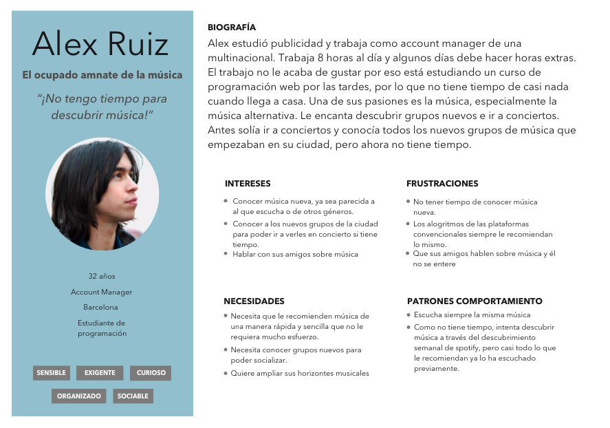
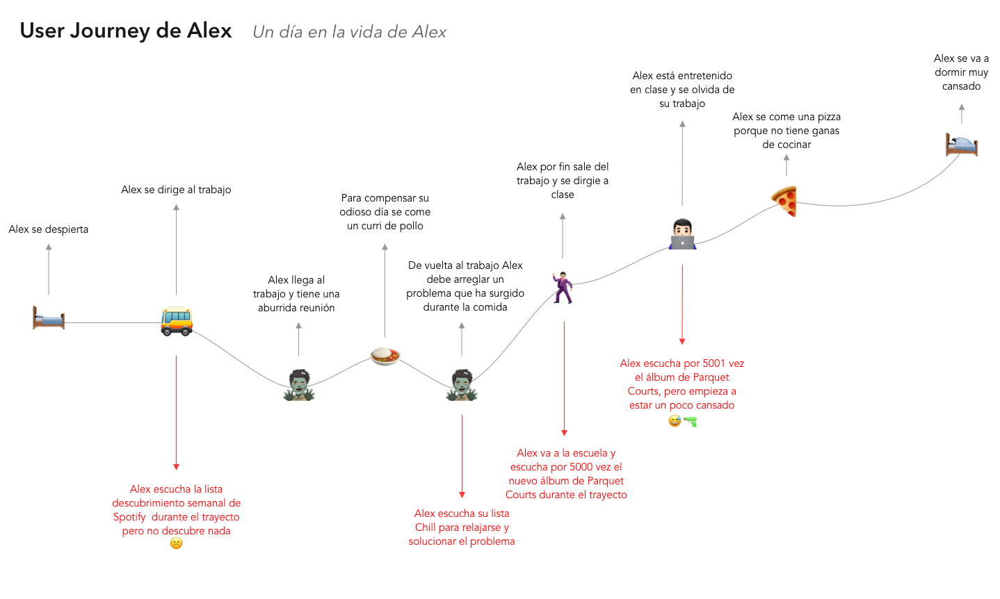
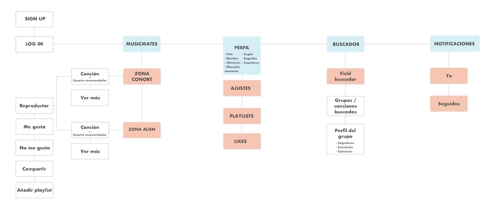
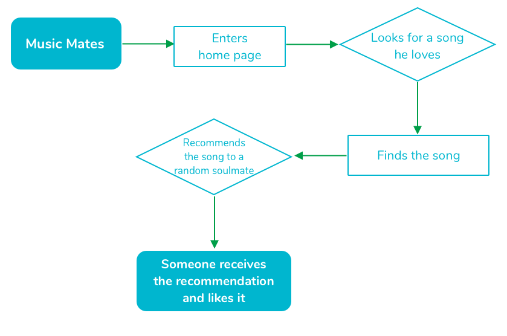
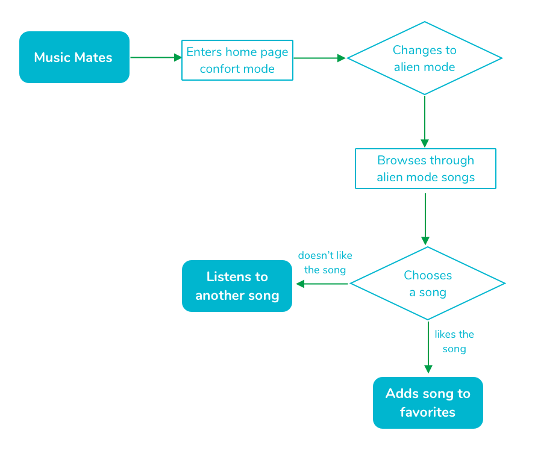

Project
MusicMates is an app that helps music lovers to discover new music We think that algorithms make boring people
, always showing almost the same things to everyone (as those things are the ones that make money).
What MusicMates offers is music recommended by people with the same taste in music as the user.
Our database is the music on bandcamp so it also offers more local and independent music that cannot be found in the other platforms.
MusicMates is also focused on the social part of sharing music, that’s why the user can see who recommended a song and he/she can follow
them in order to discover more music from them.
Research
First I did a survey asking about people music habits when recommending and when they received a recommendation. What I learned is that people don’t have a lot of time
to find new music and that they sometimes found it hard to find bands or artist that they really fell in love with. To confirm those insights I did some interviews
and the answers where the same. I also realized that it’s hard for people to step out their comfort zone in matter of music, they are not always open to discover new
genres they might like. I also found out that people don’t like to be bombarded with recommendations but they love to recommend.
“I love when people recommend me new music, but I don’t like to be bombarded and it also depends on the moment.”
“Sometimes I need recommendations because I feel like I don’t have anything to listen to. It’s like the feeling that you have when you “don’t have nothing to wear” but your closet is full.
User Persona & User Journey
The insights of the interviews and the survey helped me to make an empathy map, so I could build my user persona and its user journey.
Alex loves to discover new music but he doesn’t have time to surf the internet and his new favorite bands. He uses Spotify, but they always recommend him the same.


Problem statement
“Alex needs to discover new music easily to not feel musically stuck because he doesn’t have time to find.”
Defining the app
Knowing the problem of my users I used the Lean UX methodology to define the features of the app. One of the most important thing is the two types of music the user can find on the app, that meaning the Comfort zone and the Alien zone.
As I wanted to focus on the social part of discover and recommend music I also needed a profile and the notifications to see when someone liked your recommendation and to see what your friends are doing inside the app.
The app also needed a search button on the main screen to find the music you want to recommend.
Site Map & User Flows
Once defined the features of the app I did a site map and the flows of the user to see how they will complete all the tasks that can be made at MusicMates.



UI Design
When I started designing the UI of MusicMates I knew that it wasn’t going to be a dark UI, as the main music platform (and some others) is like.
I also knew that I couldn’t add too much color, as I couldn’t control which record covers are shown.
I did a moodboard to set the tone of the app, having in mind that I wanted to differentiate the two zones where the user can discover music.
Prototype
Here you can find the prototype of the MVP of the app. It is not a full working prototype but it helped me to test the app and learn what the next steps are.